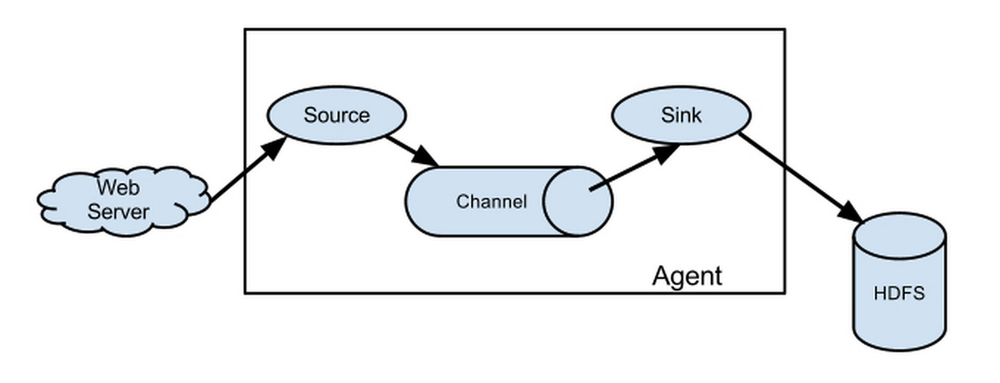
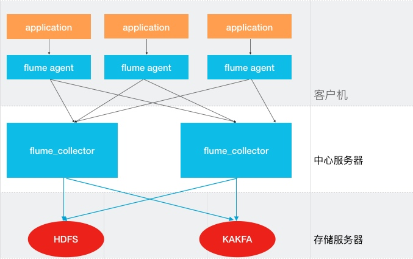
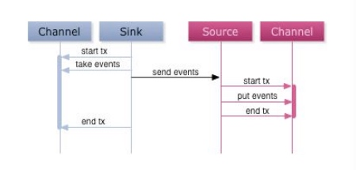
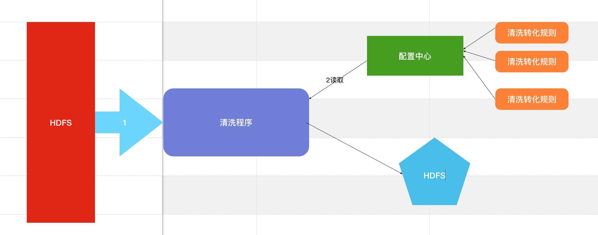
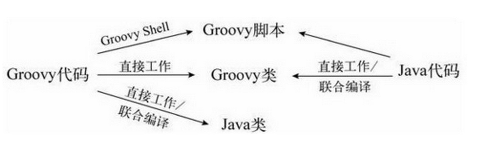

【转】shell 基础二十篇
http://bbs.chinaunix[.NET](http://lib.csdn.net/base/dotnet “.NET知识库”)/forum.PHP?mod=viewthread&tid=452942
编者按：由 wingger 整理的 shell基础十二篇 以及L_kernel补充的第十三——二十篇，涉及shell 编程及使用的各个方面，又附有大量的例子，极适合初学者系统学习。如果配合網中人的shell 十三問? ，效果更加明显。
这里是其中的第十章 sed. 其他各章可察看相应的 link.
mysql 分表分库【转】
原文地址：http://wentao365.iteye.com/blog/1740874
单库单表
单库单表是最常见的数据库设计，例如，有一张用户(user)表放在数据库db中，所有的用户都可以在db库中的user表中查到。
spark 源码编译流程
已v2.0.2 版本为列进行源码编译
- 从github 上clone源码 git clone git://git.apache.org/spark.git
- 切换到v2.0.2 git checkout v2.0.2 -b dev_2.0.2
- build/mvn -DskipTests install 此部分等待时间最长，下面必要的软件和jar包
- 给idea 装scala 插件，具体就不说了，要是网速不好可以下载下来，选择从磁盘安装idea plugin
- 导入idea，在官方文档上有下面一些话
maven 遇到不能下载问题
问题描述
Caused by: org.eclipse.aether.transfer.ArtifactTransferException: Could not transfer artifact org.apache.spark:spark-core_2.11:pom:2.0.2 from/to central (https://repo.maven.apache.org/maven2): sun.security.validator.ValidatorException: PKIX path building failed: sun.security.provider.certpath.SunCertPathBuilderException: unable to find valid certification path to requested target
原因
maven 用的默认配置，中央仓库https：xxx，所以改成http://repo.maven.apache.org/maven2，问题即可解决

storm 入门
Storm组件和Hadoop组件对比
/data/workspace/model_user/production/task_error_logs/psr_user_parameter
日志收集系统&日志ETL 实践
我司的日志收集系统负责我司的所有业务日志的收集，并分别给Hadoop平台提供离线数据和实时平台提供实时数据流。17作业的日志收集系统基于Flume设计和搭建而成。
flume 简单入门
Flume的架构主要有一下几个核心概念：
Event：一个数据单元，带有一个可选的消息头
Flow：Event从源点到达目的点的迁移的抽象
Client：操作位于源点处的Event，将其发送到Flume Agent
Agent：一个独立的Flume进程，包含组件Source、Channel、Sink
Source：用来消费传递到该组件的Event
Channel：中转Event的一个临时存储，保存有Source组件传递过来的Event
Sink：从Channel中读取并移除Event，将Event传递到Flow Pipeline中的下一个Agent（如果有的话）

- 每个Flume Agent 包含三个主要组件：Source、Channel、Sink
- Source 可以监听一个或者多个网络端口，用于接收数据或者可以从本地文件系统读取数据。每个Source 必须至少连接一个Channel。基于一些标准，一个Source 可以写入几个Channel，复制事件到所有或某些Channe
Channel 是被动组件（虽然它们可以为了清理或者垃圾回收运行自己的线程），缓冲Agent 已经接收，但尚未写出到另一个Agent 或者存储系统的数据。Channel 的行为像队列，Source 写入到它们，Sink 从它们中读取。多个Source 可以安全地写入到相同的Channel，并且多个Sink 可以从相同的Channel 进行读取。可是一个Sink 只能从一个Channel 读取。
Sink 连续轮询各自的Channel 来读取和删除事件。Sink 将事件推送到下一阶段（RPCSink 的情况下），或到最终目的地。一旦在下一阶段或其目的地中数据是安全的，Sink通过事务提交通知Channel，可以从Channel 中删除这些事件。
source channel sink 自由组合
日志收集系统简介
日志收集是大数据的基石
业务平台每天会产生大量的日志数据。收集业务日志数据，供离线和在线的分析和使用，正是日志系统要做的事情。高可用性，和高可靠性，可扩展性是日志系统具备的基本特征
目前常用的开源日志收集系统有Flume, Scribe等。Flume是Cloudera提供的一个高可用的，高可靠的，分布式的海量日志采集、聚合和传输的系统，目前已经是Apache的一个子项目。Scribe是Facebook开源的日志收集系统，它为日志的分布式收集，统一处理提供一个可扩展的，高容错的简单方案。
日志收集系统架构

整个系统分为三层：Agent层，Collector层和Store层。其中agent层即是线上业务方，通过调用接口发送数据；Collector层部署在中心服务器上，负责接收Agent层发送的日志，并且将日志根据路由规则写到相应的Store层中；Store层负责提供永久或者临时的日志存储服务，或者将日志流导向其它服务器。
Agent到Collector使用LoadBalance策略，将所有的日志均衡地发到所有的Collector上，达到负载均衡的目标，同时并处理单个Collector失效的问题。
Collector层的目标主要有两个：SinkHdfs, SinkKafka。分别提供离线的数据到Hdfs，和提供实时的日志流到Kafka。
对于Store来说，Hdfs负责永久地存储所有日志；Kafka存储最新的3天日志，并给Storm,spark等系统提供实时日志流；
下图是日志收集系统的模块分解图，详解Agent, Collector和Bypass中的Source, Channel和Sink的关系。

a. 模块命名规则：所有的Source以src开头，所有的Channel以ch开头，所有的Sink以sink开头；
b. Channel统一使用flume1.6 SPILLABLEMEMORY，
c. 模块之间内部通信统一使用Avro接口
架构考虑
可用性
- 对日志收集系统来说，可用性(availablity)指固定周期内系统无故障运行总时间。要想提高系统的可用性，就需要消除系统的单点，提高系统的冗余度。下面来看看17作业的日志收集系统在可用性方面的考虑。
Agent死掉
- 机器死机。线上部署多台agent服务器，通过ng转发，只要保证有一台服务器可用，则服务可用。
- agent进程进程死掉。原理同机器down掉一样，ng会自动转发到服务可用的机器
Collector死掉
- 采用多个collector服务，agent通过轮询方式发送到collector，当某一collector死掉之后，自动寻找下一个可用的collector服务。所以整体服务不受影响
Hdfs正常停机或异常停机
- 采用flume最新SPILLABLEMEMORY,当写入hdfs失败，达到重试次数。channel中event数量累计到一定程度，flume将会采用FILECHANNEL，写入本地磁盘，保证数据不丢失。当HDFS恢复服务，collector再将FILECHANNEL中数据写到HDFS
Hdfs变慢
当Hadoop上的任务较多且有大量的读写操作时，Hdfs的读写数据往往变的很慢。由于每天，每周都有高峰使用期，所以这种情况非常普遍。
对于Hdfs变慢的问题，我们同样使用SPILLABLEMEMORY来解决。当Hdfs写入较快时，所有的events只经过MemChannel传递数据，减少磁盘IO，获得较高性能。当Hdfs写入较慢时，超过MEMEORYCHANNEL容纳范围的EVENTS将会被写到FILECHANNEL，有一个较大的数据缓存空间。
可靠性
对日志收集系统来说，可靠性(reliability)是指Flume在数据流的传输过程中，保证events的可靠传递。
- 对Flume来说，所有的events都被保存在Agent的Channel中，然后被发送到数据流中的下一个Agent或者最终的存储服务中。那么一个Agent的Channel中的events什么时候被删除呢？当且仅当它们被保存到下一个Agent的Channel中或者被保存到最终的存储服务中。这就是Flume提供数据流中点到点的可靠性保证的最基本的单跳消息传递语义。
那么Flume是如何做到上述最基本的消息传递语义呢？
- 首先，Agent间的事务交换。Flume使用事务的办法来保证event的可靠传递。Source和Sink分别被封装在 事务中，这些事务由保存event的存储提供或者由Channel提供。这就保证了event在数据流的点对点传输中是可靠的。在多级数据流中，如下图，上一级的Sink和下一级的Source都被包含在事务中，保证数据可靠地从一个Channel到另一个Channel转移

- 其次，数据流中 Channel的持久性。Flume中MemoryChannel是可能丢失数据的（当Agent死掉时），而FileChannel是持久性的，提供类似mysql的日志机制，保证数据不丢失。而我们采用FLUME最新的SPILLABLECHANNEL，该CHANNEL结合MEMORYCHANNEL,FILECHANNEL的优点，当MEMEORYCHANNEL中容纳不下，将会自动采用FILECHANNEL，保证数据不丢失
可扩展性(scalability)
对日志收集系统来说，可扩展性(scalability)是指系统能够线性扩展。当日志量增大时，系统能够以简单的增加机器来达到线性扩容的目的
对于基于Flume的日志收集系统来说，需要在设计的每一层，都可以做到线性扩展地提供服务。下面将对每一层的可扩展性做相应的说明。
Agent层
对于Agent这一层来说，以HTTP方式提供接口，可以水平扩展，不受限制。一个方面，Agent收集日志的能力受限于机器的性能，正常情况下一个Agent可以为单机提供足够服务。另一方面，如果机器比较多，可能受限于后端Collector提供的服务，但Agent到Collector是有Load Balance机制，使得Collector可以线性扩展提高能力。
Collector层
对于Collector这一层，Agent到Collector是有Load Balance机制，并且Collector提供无差别服务，所以可以线性扩展。其性能主要受限于Store层提供的能力。
Store层
对于Store这一层来说，Hdfs和Kafka都是分布式系统，可以做到线性扩展。
在FLUME 1.5之前提供了MEMEORYCHANNEL 和 FILECHANNEL，1.5以及之后提供新的复合CHANNEL，SPILLABLECHANNEL
- MemoryChannel: 所有的events被保存在内存中。优点是高吞吐。缺点是容量有限并且Agent死掉时会丢失内存中的数据。
- FileChannel: 所有的events被保存在文件中。优点是容量较大且死掉时数据可恢复。缺点是速度较慢。
上述两种Channel，优缺点相反，分别有自己适合的场景。然而，对于大部分应用来说，我们希望Channel可以同提供高吞吐和大缓存。基于此，我们采用新的复合SPILLABLECHANNEL。
当堆积在Channel中的events数小于阈值时，所有的events被保存在MemoryChannel中，Sink从MemoryChannel中读取数据； 当堆积在Channel中的events数大于阈值时， 所有的events被自动存放在FileChannel中，Sink从FileChannel中读取数据。这样当系统正常运行时，我们可以使用MemoryChannel的高吞吐特性；当系统有异常时，我们可以利用FileChannel的大缓存的特性。
提供实时流
17作业的部分业务，如实时监控等服务，需要处理实时的数据流。因此我们希望Flume能够导出一份实时流给Kafka
一个非常重要的要求是实时数据流不应该受到其它Sink的速度影响，保证实时数据流的速度。这一点，我们是通过Collector中设置不同的Channel进行隔离。
系统监控
监控是必不可少的部分。设计合理的监控，可以对异常情况及时发现，只要有一部手机，就可以知道系统是否正常运作。对于17作业的日志收集系统，我们建立了多维度的监控，防止未知的异常发生
通过发送给zabbix的数据，我们可以绘制出发送数量、拥堵情况和写Hdfs速度的图表，对于超预期的拥堵，
flume写hfds状态的监控
对于非常重要的日志，我们每个小时会运行程序去检查日志，当发生异常我们会通过邮件短信报警
日志大小异常监控
我们会每天监控重要日志量的大小，当日志量有较大的波动，能及时反馈出来
通过以上分析17作业日志服务具备高可用性，高可靠性，可扩展等特性的分布式服务
日志ETL
ETL目的：清洗原始数据，让数据可靠，易用
日志ETL 整体流程如下图：

实现关键：
public class GroovyServiceImpl implements IGroovyService {
private Logger logger = LoggerFactory.getLogger(GroovyServiceImpl.class);
@Override
Object execute(String groovyScript, Map params) {
Class<GroovyObject> groovyObjectClass = parseScript(groovyScript)
GroovyObject groovyObject
try {
groovyObject = groovyObjectClass.newInstance()
} catch (any) {
logger.error("error when execute groovyScript:{}", any)
throw new RuntimeException("error,when execute groovyScript", any)
}
ArrayList<String> list = Lists.newArrayList();
return groovyObject.invokeMethod("validate", [params, list] as Object[])
}
private Class<GroovyObject> parseScript(String script) {
GroovyClassLoader loader = new GroovyClassLoader();
Class<GroovyObject> clazz = loader.parseClass(script)
clazz
}
}
example:
class AdrNormal {
private static bldr
private static writer
static {
bldr = new groovy.json.JsonBuilder()
writer = new StringWriter()
}
def validate(Map dataMap) {
def otherField = ["ktwelve", "native_version"]
def returnList = []
List<String> keys = dataMap.get("keys")
Set<String> keySet = dataMap.keySet()
List<String> keyList = Lists.newArrayList(keySet)
List<String> diffList = keyList - keys
diffList.remove("keys")
for (key in keys) {
if (otherField.contains(key)) {
continue
}
String value = dataMap.get(key)
if (Strings.isNullOrEmpty(value)) {
value = "null";
}
returnList.add(value)
}
def map = [:]
for (key in diffList) {
map[key] = dataMap.get(key)
}
bldr.call(map)
returnList.add(bldr.toString())
for (key in otherField) {
String value = dataMap.get(key)
if (Strings.isNullOrEmpty(value)) {
value = "null";
}
returnList.add(value)
}
returnList
}
}
AWK 语言设计
快速入门
简单实例
- 数据准备 emp.data
name salary hour
Beth 4.00 0
Dan 3.75 0
Kathy 4.00 10
Mark 5.00 20
Mary 5.50 22
Susie 4.25 18
- 打印出员工工作时长大于0的员工和薪资
awk '$3>0 { print $1 ,$2*$3}' emp.data
该命令告诉操作系统运行awk命令，被运行的程序用单引号包起来，从输入文件emp.data获取数据。被
单引号包围的部分是完整的awk程序。它由单独的一个模式-动作语句组成，模式$3>0匹配每一行输入，如果该行的第三列大于0，则动作{print $1,$2*$3}就会执行，打印出每一行的第一个字段，以及第二个字段和第三个字段的乘积

java 和groovy的混合使用
- 开发环境搭建
- groovy 中使用groovy类
- 利用联合编译使用混合使用Groovy和java
- 在Java中调用Groovy动态方法
- groovy中使用java
- groovy调用groovy脚本
- 从java中调用groovy脚本
在应用中，我们可以在一个Java类、一个Groovy类或者一个Groovy脚本中实现某个特定功能。之后可以在Java类、Groovy类或Groovy脚本中调用该功能。图10-1展示了混合使用Java类、Groovy类和Groovy脚本的各种选择
在groovy 使用groovy类，无需做什么，直接就可以工作。我们只需要确保所依赖的类在在类路径下，要么是源码，要么是字节码。
要再groovy类中执行groovy脚本，我们可以使用，groovyShell。
要在java类中使用groovy脚本，则可以使用ScriptEngine API。
如想在java中使用groovy类，或者在groovy类中使用java类，则可以使用groovy联合编译工具

netty 入门
Markdown 语法和 MWeb 写作使用说明
Markdown 的设计哲学
Markdown 的目標是實現「易讀易寫」。
不過最需要強調的便是它的可讀性。一份使用 Markdown 格式撰寫的文件應該可以直接以純文字發佈，並且看起來不會像是由許多標籤或是格式指令所構成。
Markdown 的語法有個主要的目的：用來作為一種網路內容的寫作用語言。
Copyright © 2015 Powered by MWeb, Theme used GitHub CSS.